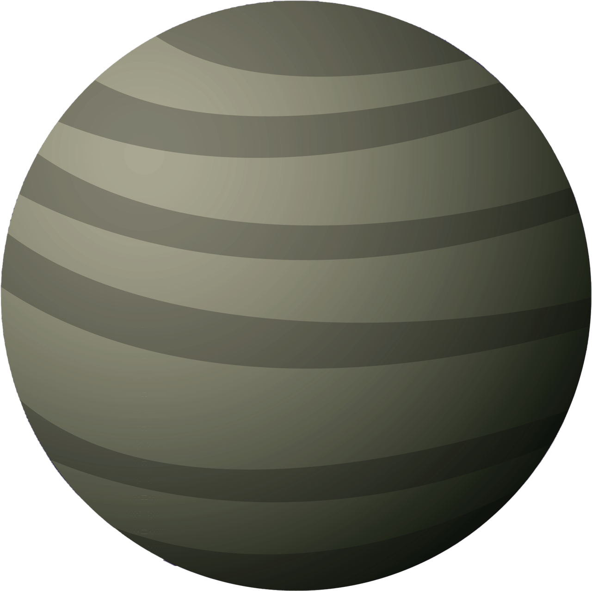
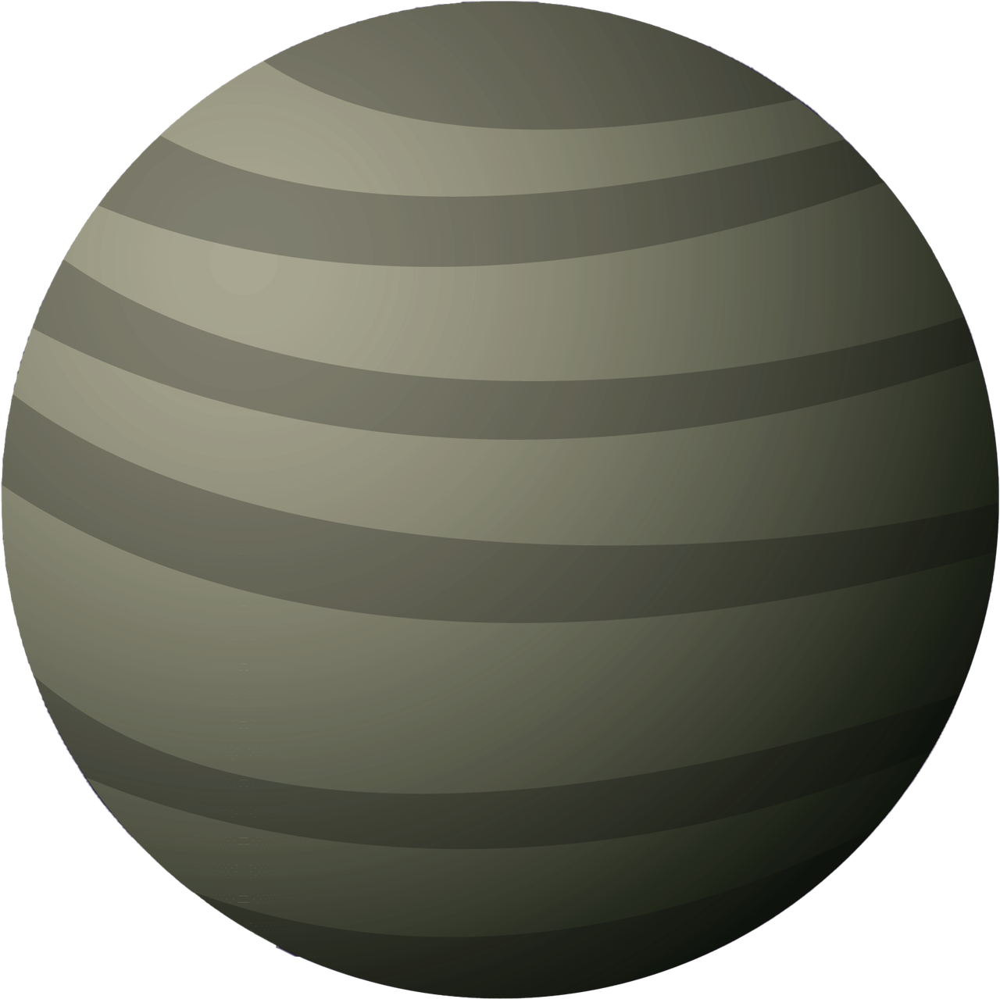

一切的開始
75年前（1947），有一個叫阿諾的飛行員，在美國華盛頓州附近目睹了一個長的像碟子的不明飛行物體，以時速將近2000公里的速度從他眼前飛過。隨後幾週全美各地都密集的發生不明飛行物體(UFO)的事件，整個夏天，全美發生了將近900件UFO目擊事件 ... 讀更多


75年前（1947），有一個叫阿諾的飛行員，在美國華盛頓州附近目睹了一個長的像碟子的不明飛行物體，以時速將近2000公里的速度從他眼前飛過。隨後幾週全美各地都密集的發生不明飛行物體(UFO)的事件，整個夏天，全美發生了將近900件UFO目擊事件 ... 讀更多
是的，當然有外星人。根據BBC在2020年的報導，科學家的最新推估是，在銀河系裹，可能還有36個外星文明，只是離我們大概在1.7萬光年之外。我們向外星發出電波信號，是70年前（上世紀的五十年代）。所以，運氣好的話，再過六千年，我們可以開始第一次的接觸。...讀更多
 


被喻為是愛因斯坦之後，最偉大的科學家霍金，他在去世之前，多次公開表達”不要嚐試連繫外星文明”，他認為這樣的嚐試極有可能導致人類文明的滅亡...讀更多
1987年有個法國人馬歇，坐上了外星人的飛碟，去了宇宙遊玩了一趟後，回來後把這趟旅行的見聞寫了一本書叫【海奧華預言】。外星人的世界觀裹，文明被分成九個等級。地球的文明是最低等級的第一等...讀更多


根據海奧華的回答，金字塔是外星人科技，姆大陸是真實存在的。這樣的說法，剛好符合在古文明裹尋找外星人足跡的這一派學者。這派被稱為偽考古學家，他們藉由現有的考古資料，重新疏理，依邏輯再加上一點想像，建構新的歷史。這派認為地球的文明並不是四千年六千年，而是一萬八千年前就存在...讀更多
我第一次接觸外星人是在國中的時候，在西門町。那時候西門町還是台北最熱鬧的地方，人山人海。獅子林樓下有個攤位，用帳棚圍起來，只留一個布簾進出。門口有個面像不是很友善的阿婆，給她五十元，就可以進去看外星人。我們一群同學，每次經過都想進去，但沒人花的起這個錢。那年代，一碗麵才10元台幣...讀更多